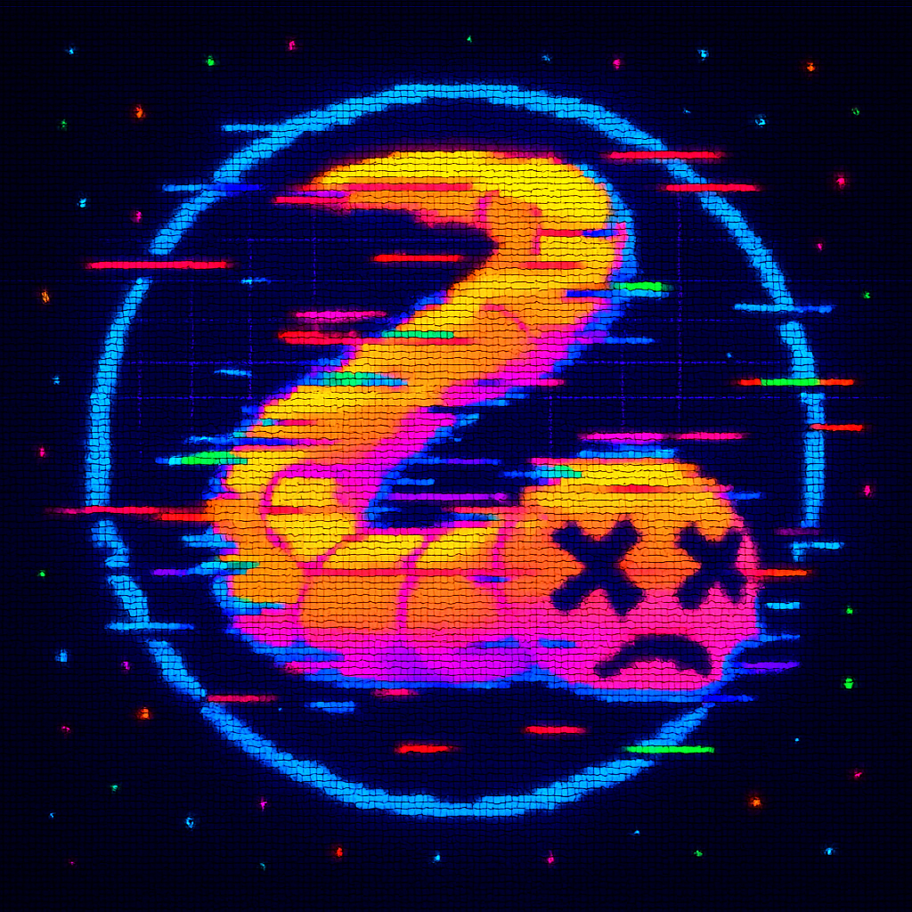

Server Unavailable
The Slither Clone SIO server seems temporarily offline or unreachable. We are trying to re-establish the connection for you.
In the meantime, play Snake!
Score: 0
Arrows / ZQSD / WASD: Move | Enter: Start/Restart
Status: Searching...
Next attempt in
-- sec
Attempts: 0
You will be redirected automatically as soon as the server is back
online.